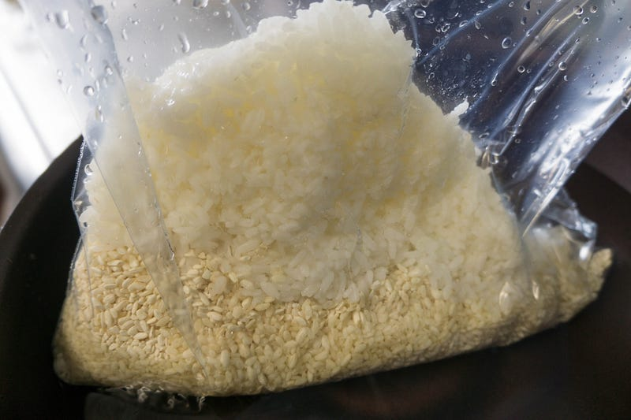
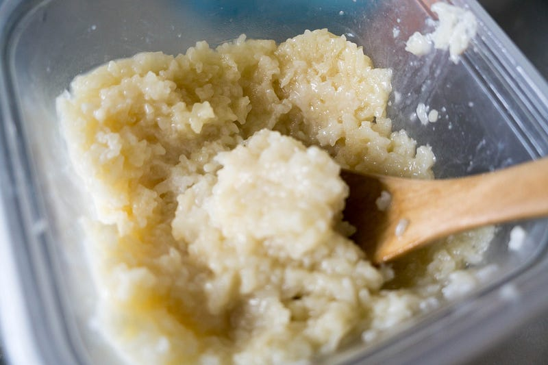
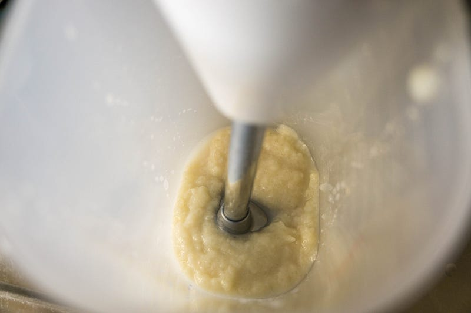
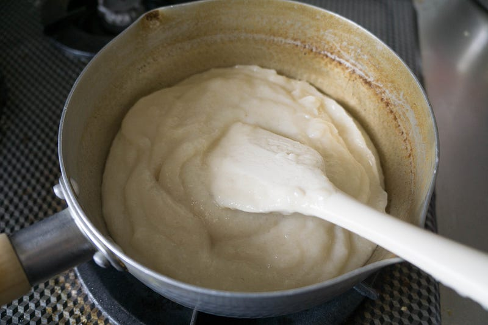
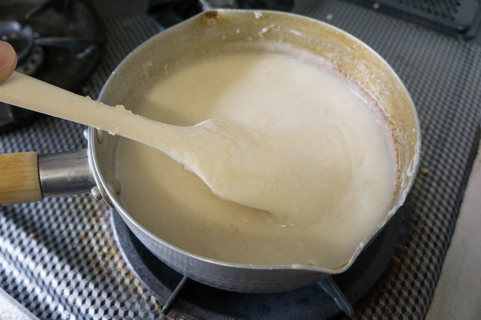

anovaで甘酒をつくる
anovaで甘酒をつくる
最近諸事情により家で甘い物を食べにくい。そこでなにか「許される範囲」の甘い物を作りたい。そうすると和だな。和… 夏だし、甘酒かな！ってことで甘酒をanovaで作ります。
前回はこちら
甘酒のイメージで酒っぽいものを思ったあなたは酒粕から作る甘酒の事を考えた人。今回作るのは米麹と米と水で作る甘酒です。甘くておいしいだけでなく、アミノ酸やらビタミンBやらがたくさん入ってて夏にピッタリのあれです。
この甘酒は基本的に米麹に米を醸させればいつのまにかできてる代物なので、調理もへったくれもないのだが問題は温度管理である。米のデンプンを糖に変えてくれる米麹が最も盛んにこの処理を行ってくれるのが60℃くらいの温度なので、この温度をキープしないといけない。そしてその時間とは6時間〜8時間。
同じ温度で長時間… 完全にanovaの出番ですね。
New: Anova Precision Cooker - WIFI 2nd Gen (900 Watts)が卓上IHクッキングヒーターストアでいつでもお買い得。当日お急ぎ便対象商品は、当日お届け可能です。アマゾン配送商品は、通常配送無…amzn.to
まず市販の米麹300gに米と水を追加して、いつものジップロックします。

なんかレシピによって追加する水と米の量がまちまちだったので、この辺は作る人のさじ加減次第なのだと思う。これは300gの米麹にご飯茶碗2杯分くらいを入れたところ。水は2カップくらい。
なお、この写真ではバラバラだけど、この時点でちゃんと米と米麹を混ぜて置くように。その方が万遍なく発酵する。
で、anovaで60℃8時間設定。甘酒は7時間くらいで取り出したが、同時に豚バラ肉をやってた都合、このような設定になっている。
ひとつだけ注意することは「米は水に浮かぶ」ということです。anovaに入れる際には重しをつける事を考えておきましょう。ちなみに僕の場合はクリップを使って、ジップロックにステンレス製のトングをくくりつけておきました。
夜中にできあがったので、その時点ではさっさとタッパーに詰め、冷蔵庫の便利機能でさっさとあら熱を取って一旦冷蔵庫にしまった。

翌朝取ったのがこの状態。米が若干茶色というか黄色くなって醸されてるのがわかるだろうか。
一口味見するとあっっっっっっっまい。菌の力って恐ろしい。このままだとミルク粥の超甘いバージョンみたいな感じ。さすがにお好きな人以外には食べにくい。あと冷ましただけなので、多分どこかにまだ菌は生きてる（はず？）。火入れを行って余計な菌も含めて一旦活動を停止させる必要がある。
ってことでまずバーミックスで粉砕。
bamix（バーミックス）M300 60周年 ベーシックセット ホワイト M300BSWHがフードプロセッサーストアでいつでもお買い得。当日お急ぎ便対象商品は、当日お届け可能です。アマゾン配送商品は、通常配送無料（一部除く）。amzn.to

適度な流動性を持たせるために様子を見ながら水を追加してバーミックスでやっていきます。
粉砕したものを火入れするために鍋にうつします。

ベシャメルソースかヨーグルトっぽい感じ。この状態がお好きならこれでもいいけど、もう少し甘みが弱くてもいいのでさらにもう少し水を追加して調節してから火入れ。

火入れは軽く煮立つくらいまで火を入れたら終了。
あとはお好きなレベルまで水でのばして飲んだり、涼しげな容器に入れてスプーンでぱくぱく食べたり。
優しい甘さだけど、結構のどのの奥に来る感じにしっかり甘い。うちの次男はイマイチな顔をしていたけど、長男は美味しそうにぱくぱく食べてた。親は完全に虜です。作り方も放っておくだけだし、夏の間にまたやりたい感じ。
anovaでは基本的に今まで肉料理ばかり作ってきたけど、こういう醸し系のものもお手軽にできそうなので、今後も是非やっていきたい。
次回はこちら